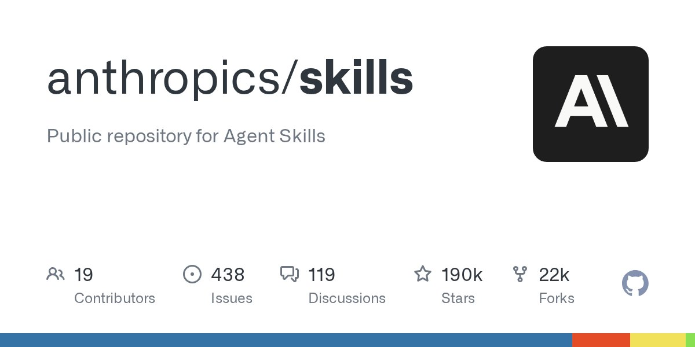
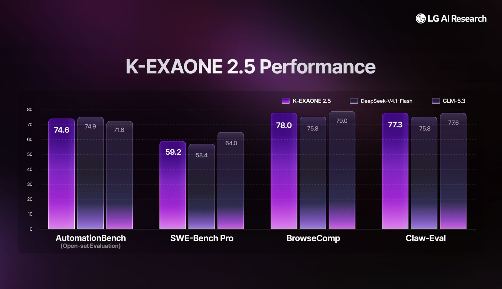
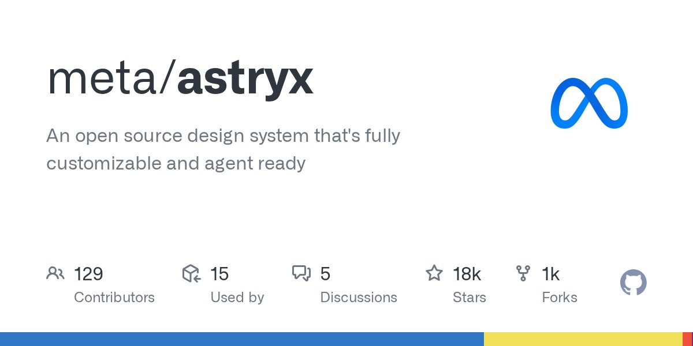

头条 一

图片来源：GitHub TrendingAnthropic 正式开源 Agent Skills 规范仓库，提供扩展 Claude 能力的标准化技能集合。项目包含可重复调用的指令与资源，涵盖文档处理及 MCP 服务器生成等场景。所有技能均采用 Apache 2.0 协议，开发者可在 Claude Code 中快速安装与复用。
头部大模型厂商首次将生产级智能体能力库标准化与开源化，为行业建立 Agent 扩展协议树立了新标杆。
来源：GitHub Trending
头条 二

图片来源：IT 之家LG AI 研究院宣布面向全球开发者免费开放 K-EXAONE 2.5 模型 API。该模型在 8 月版本基础上进行了追加训练，具备比肩顶级开源大模型的智能体能力。官方测试显示，其在 SWE-Bench Pro 等测评中的表现与 DeepSeek-V4.1-Flash 和 GLM-5.3 相当。
韩国科技巨头直接免收高阶智能体模型的 API 费用，推高了端侧与云端智能体基座的能力性价比屏障。
来源：IT 之家
头条 三

图片来源：GitHub TrendingMeta 开源内部迭代八年的 UI 设计系统 Astryx。该系统基于 React 19 和 StyleX 构建，包含 150 多个组件及命令行工具，支撑了内部上万个应用。Astryx 原生适配了 AI 智能体交互，使人类开发者与 AI 编程 Agent 能够使用同一套工具链协同开发。
传统前端 UI 库正式迈入 Agent 原生时代，标志着人机协同开发模式向底层设计系统基础设施层全面渗透。
来源：GitHub Trending
Anthropic 开源 Agent Skills，给智能体给出了统一的标准动作库。当模型学会调用模版，标准化接口就成了新的竞争高地。
LG 将性能对标顶级开源模型的 API 直接免费，凸显出后发厂商通过零价格策略硬砸生态位、卷动智能体市场的野心。
从底层 UI 组件到代码托管系统，全都在针对 Agent 重构。未来写代码与调接口的不仅是程序员，更是自主 Agent。